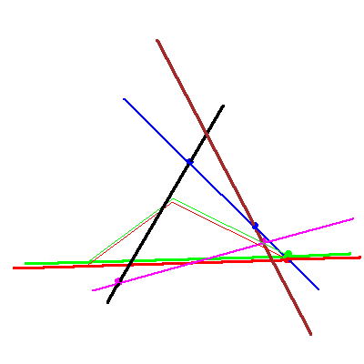

The problem of four lines in P3


The problem of four lines in P3 |
|
|  |
After the specialization sequence, one solution line is simply the line through the point from the fixed flag that meets the two condition lines and the other solution line is the line lying in the plane from the fixed flag that meets our two fixed lines. |
 
|